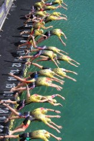

Super League Triathlon richtte zich dit jaar voor het eerst op de toekomst van de triatlonsport - en gaven de volgende generatie een kans om tegen elkaar te racen over het Enduro-formaat op Jersey Island (GB) - tijdens het grootste triatlonweekend. De organisatie speurde Europa af om de beste jeugd (15-16 jaar) en junior (17-19 jaar) atleten te vinden en hen naar het prachtige eiland Jersey te brengen voor een “once in a lifetime experience” om te racen als onderdeel van de eerste Super League Triatlon Championship Weekend.
De SMO-Specialized atleten Raf De Dobbelaere, Joris Basslé en Jarno Cuypers gaven het beste van zichzelf geven. Ze racen in een ENDURO-format op precies dezelfde parcours als de professionele atleten, met precies hetzelfde niveau van ondersteuning van het SLT-team en de brullende menigte.
Op uitnodiging van Triatlon Vlaanderen werden Raf De Dobbelaere (jeugd), Jarno Cuypers en Joris Basslé (juniors) geselecteerd voor de eerste jeugduitgave op de Super League Triathlon in Jersey. Een ervaring die ze nooit meer zullen vergeten. Kunnen racen in deze unieke setting, waar ook de wereldtop voor topsport spektakel zorgde in de Triple Mix en Enduro Triathlon, maak je niet alle dagen mee. Tenzij ze, binnen een aantal jaren, ook tot de wereldtop behoren. Een mens mag al eens dromen...! Onze 3 SMO-ers zaten aardig in de race en lieten hun tanden zien. Raf vocht voor wat hij waard was en sleepte een mooie 26e plaats in de wacht (tussen atleten van 2 jaar ouder) en zette zo zijn eerste op internationaal niveau. Jarno en Joris streeden mee in de voorste gelederen en finishte als 10e en 13e. Een triatlon moment om in te kaderen.